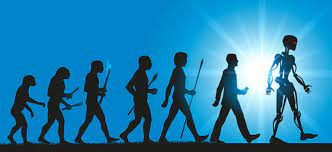

La historia de la inteligencia artificial (IA) se remonta a mediados del siglo XX. Iniciada como un campo de estudio interdisciplinario, la IA se centró en desarrollar sistemas y programas capaces de imitar la inteligencia humana. A lo largo de los años, ha experimentado avances significativos, incluyendo el surgimiento de la "era dorada" en los años 50 y 60, el desarrollo de algoritmos de aprendizaje automático y el auge de la IA en aplicaciones prácticas en campos como el procesamiento de lenguaje natural, la visión por computadora y los vehículos autónomos
En la actualidad, la inteligencia artificial (IA) ha alcanzado un nivel sin precedentes de relevancia y aplicación en diversos campos. Ha impulsado avances significativos en áreas como el reconocimiento de voz, la traducción automática, la asistencia virtual, la detección de fraudes, la medicina, la robótica y mucho más. La IA está siendo utilizada para mejorar la eficiencia en las empresas, personalizar la experiencia del usuario, optimizar la toma de decisiones y brindar soluciones innovadoras a problemas complejos. Sin embargo, también surgen debates sobre aspectos éticos, responsabilidad y privacidad en relación con el uso y desarrollo de la IA. La investigación y el desarrollo continúan avanzando rápidamente, y la IA se perfila como una tecnología transformadora con un impacto profundo en nuestra sociedad y economía.
algunos proyectos futuros en el campo de la inteligencia artificial (IA) incluyen: 1.IA en la atención médica para mejorar diagnósticos y tratamientos. 2.Desarrollo de vehículos autónomos para una conducción sin intervención humana. 3.Enfoque en la ética y responsabilidad en el desarrollo y uso de la IA. 4.Mejora de asistentes virtuales con interacciones más naturales y comprensivas. 5.Aplicación de la IA en la educación para personalizar la enseñanza. 6.Uso de la IA en la ciberseguridad para detectar y prevenir amenazas en línea. 7.Estos proyectos representan avances emocionantes en el campo de la IA y su impacto en nuestra sociedad y vida cotidiana será significativo en el futuro.
